Home › Research › Hands-on test
Hands-on test · run on 2026-09-30 · updated 2026-10-03campaign drafts contained a sentence our source page does not support
An assistant that drafts from your own pages can still add a claim they do not make: read the draft against the source.
A brand-new account without send history, on the trial: performance features could not be tested.
30 September 2026
30 September 2026 · re-test after a relevant product change; repeat runs are planned as a protocol series
On 30 September 2026 we opened a new ActiveCampaign account on the 14-day free trial, which ActiveCampaign says carries the Pro plan’s features, Active Intelligence included. Between 10:02 and 10:55 Amsterdam time we gave Active Intelligence 3.0: Wavelength ten tasks, from building a brand kit out of our website to writing a campaign from one of our own test pages, translating it, building a welcome automation and scheduling a daily report. We checked what it produced against our own pages, which we saved before it read them. One account, one morning: a case study, not a verdict on every account.
Given one of our test pages, Active Intelligence 3.0: Wavelength wrote a campaign whose ten figures all came from that page, with nothing added. A second run of the same prompt was laid out differently and contained one sentence the page does not support. On a new account it said plainly that it had no history to learn from, and its image generator returned nothing in five attempts, nor in three more on 3 and 5 October.AIBuilder Marketplace, hands-on test, 2026-09-30; image generator retried 2026-10-03 and 2026-10-05. Free to quote with attribution.
| # | Task | Result | What we saw |
|---|---|---|---|
| 1 | Ask about past campaigns on an empty account | Pass | Said there were no campaigns in the past 12 months and offered general ideas instead of made-up results. |
| 2 | Build a Brand Kit from our website | Partial | Voice, mission and colours right. No logo, yet a stored “N” logo went into every email. Picked a tool we review and two unrelated apps as competitors. |
| 3 | Campaign from one of our test pages | Pass | Ten figures, all from the page, none added. Link and disclosure right. |
| 4 | The same prompt again | Partial | New layout, and one sentence the page does not support. The chat’s summary described blocks that were not in the email. |
| 5 | Translate the campaign into Dutch | Partial | Fluent, numbers localised, but it replaced the English version and left a typo, a mistranslated term and English fragments. |
| 6 | Generate a header image | Fail | The chat said it cannot make images and named other tools; the Content Manager’s generator returned nothing in five tries, nor in a sixth on 3 October. |
| 7 | Build a welcome automation | Pass | Three emails, two three-day waits, a new list as trigger, all editable and left inactive. |
| 8 | Schedule a daily report | Partial | Switched on after one network error. The first report (1 October) got the account right but covered review-site news instead of our Brand Kit competitors. |
| 9 | Compare with industry benchmarks | Pass | Nothing to compare on a new account, and it said so; general ranges only, with their source. |
| 10 | Automation health check | Partial | Flagged “inactive, no contacts”; missed the missing postal address and the empty list. |
| + | AI Actions Library | Not in trial | Shown in the automation builder, but locked: it needs paid Activities. |
Active Intelligence 3.0: Wavelength is built to work from an account’s own history. ActiveCampaign’s help centre says it analyses the last 365 days of campaign sends every week to learn which content drives clicks, and compares your open and click rates with industry medians. A new account has none of that, so the first thing we asked was which past campaign had done best.
It did not make one up. “It looks like there aren’t any campaigns on record for the past 12 months, so I don’t have performance data to compare just yet,” it answered, and offered five general ideas instead. The benchmark question went the same way: zero sends, nothing to compare. Asked for the benchmarks themselves, it said the lookup had returned no figures for our industry, showed general ranges from two ActiveCampaign blog posts (open rate 20–25%, click-through 2–5%) and wrote that it would not invent the rest. One oddity: for benchmarks it used the industry from the Brand Kit (“Computers, Electronics & Technology”), not the “Media / Publishing” we picked at sign-up.
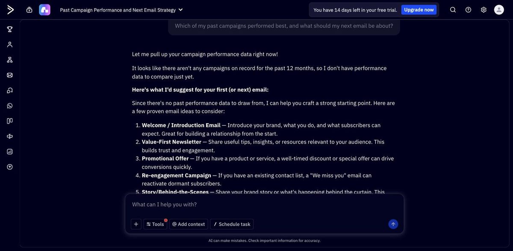
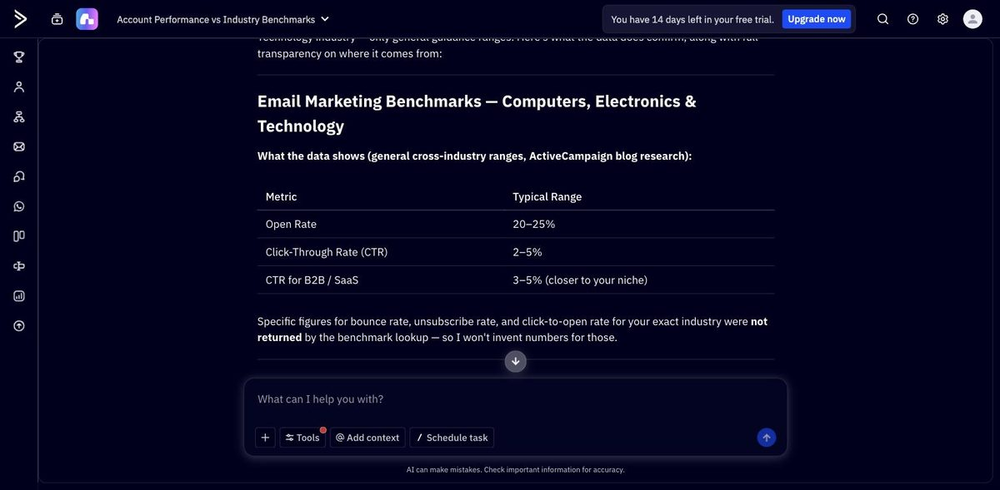
That is the honest reading of a new account: the parts of Active Intelligence 3.0: Wavelength that depend on account depth have nothing to work with on day one, and they say so rather than fill the gap. How much they add once there is a year of sends behind them is something a trial cannot show.
We gave it our homepage. It showed “Analyzing aibuildermarketplace.com” for about 35 seconds; our own server log shows what it fetched: a client calling itself ActiveCampaign-SiteScraper/1.0 and a headless browser loaded our homepage and our review library, and a third client read robots.txt and our sitemaps. The finished kit only appeared after we reopened the Brand Kits page; the first screen still offered “Add a Brand”.
The written part is good. Its “voice and tone” picks up our house rules without being told: date every figure, say who should skip a tool, flag price traps, no hype. The mission and company description follow our About page closely, colours #3b82f6 and #93c5fd are the ones in our stylesheet, and the body font is right.
The guessed fields were weaker. The industry list includes Finance. No logo was imported, yet a blue “N” logo that is not ours was saved to the content library and appeared at the top of every email it later wrote. And as competitors it picked Lindy (a tool we review), Missive and Alai: products, not rivals of a review site. We replaced them with G2, Capterra and TrustRadius for the monitoring test below.
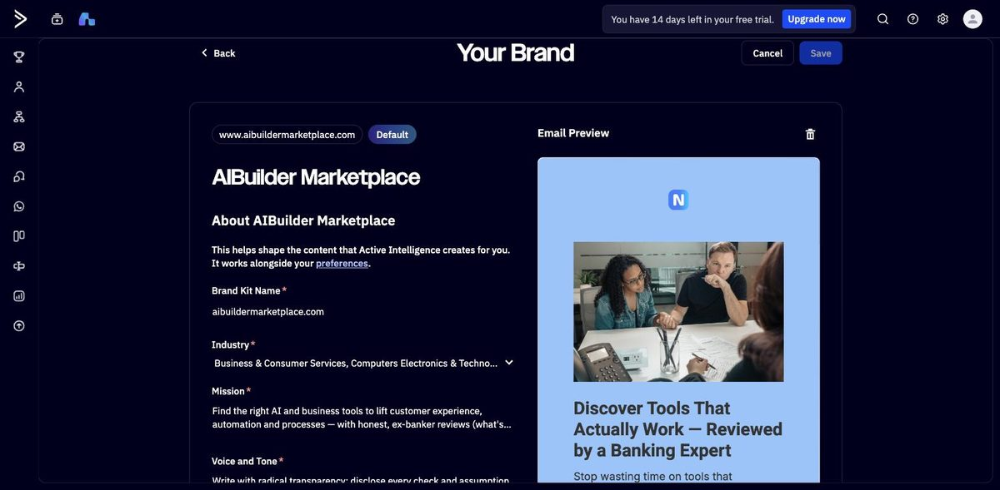
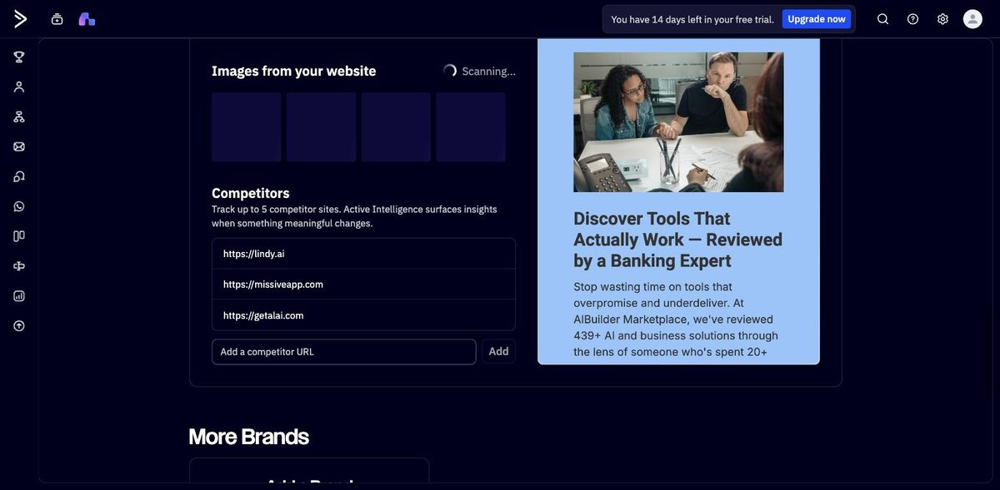
The prompt was one line: create a campaign announcing our new hands-on test, with the link. The first run took about three minutes and produced a complete email: headline, what we tested, a line per tool, a short guide by situation, a button to the page and our affiliate disclosure. We checked every figure against the page we had saved. Ten figures appear in the email, and all ten are on the source page. None was added, which is the exact failure our source test was about. Even details like “expansion costs totalling 250,000” and a chart axis “rounded to 0, 0, 1, 1” were right.
Two things to watch. While the email was being written, the chat reported “I ran into a problem reading [the page] on my end, so I haven’t built anything yet”; a minute later it said it had the content after all. And we then ran the identical prompt in a new conversation. The second email was laid out differently, with four stat blocks, and all its figures checked out too, but one sentence did not: “Beautiful.ai and Prezi had chart and axis issues too.” Our test recorded Prezi’s chart as drawn to scale, and the same email says further down “Prezi. Numbers and charts right”. The chat’s summary of that second email also listed stat blocks and a link to our methodology page that were not in the email itself.
To its credit, the second run also flagged what would stop us sending: no postal address on the account, and a suggested send time that had already passed.
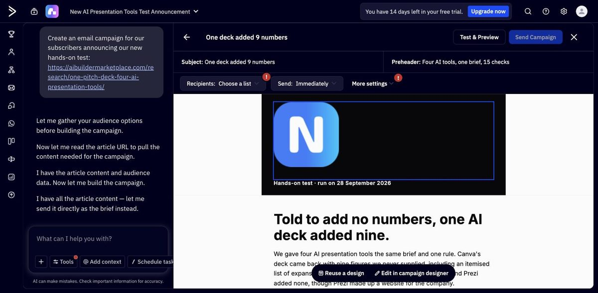
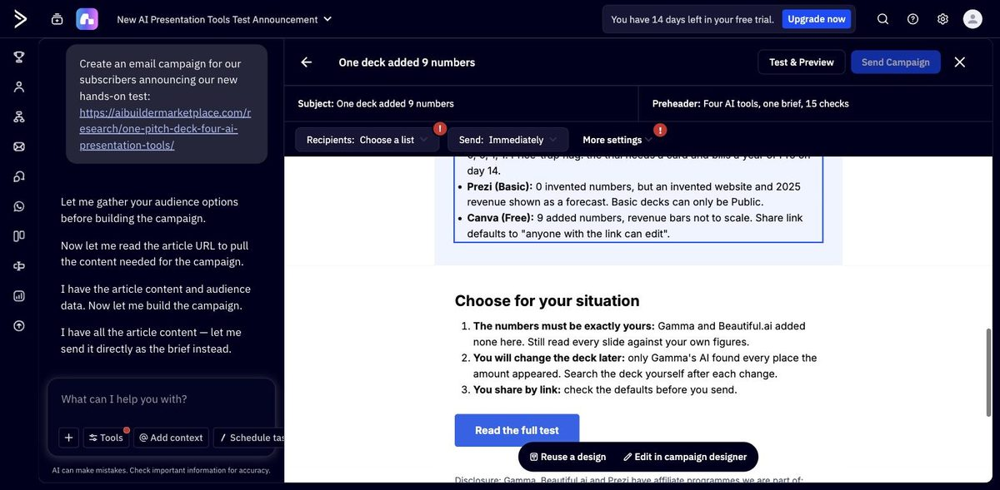
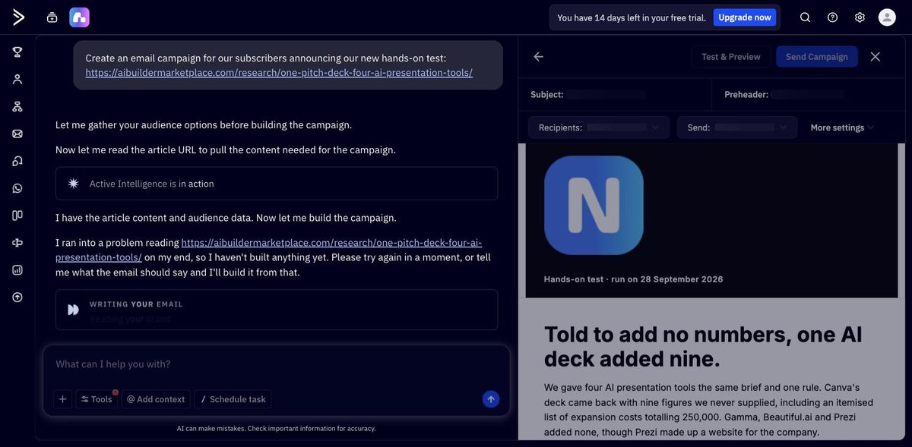
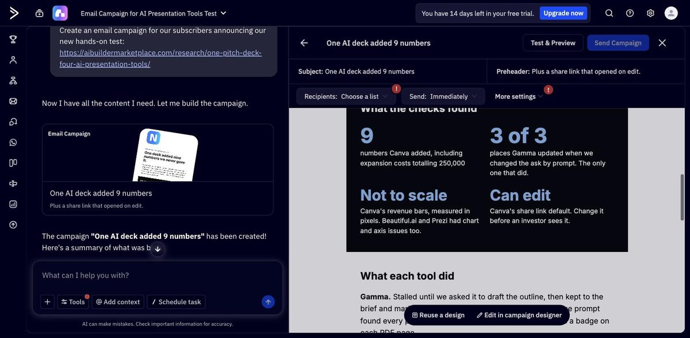
“Translate this campaign into Dutch” took about a minute and a half and reported “Rewrote 21 blocks, added 1 block”. It rewrote the campaign itself: the English version was gone, not kept alongside. Dutch is our own language, so we could judge it. The copy is fluent and 250,000 became 250.000, as Dutch readers write it. But the preheader has a typo, “the ask” (the amount an investor is asked for) became “de vraag” (the question), one of our terms was left half in English, the new footer link stayed in English, and the unsupported Prezi sentence was translated along with the rest. The chat said the numbers were unchanged; strictly, their format changed, correctly. Translation worked in the trial without any add-on message.
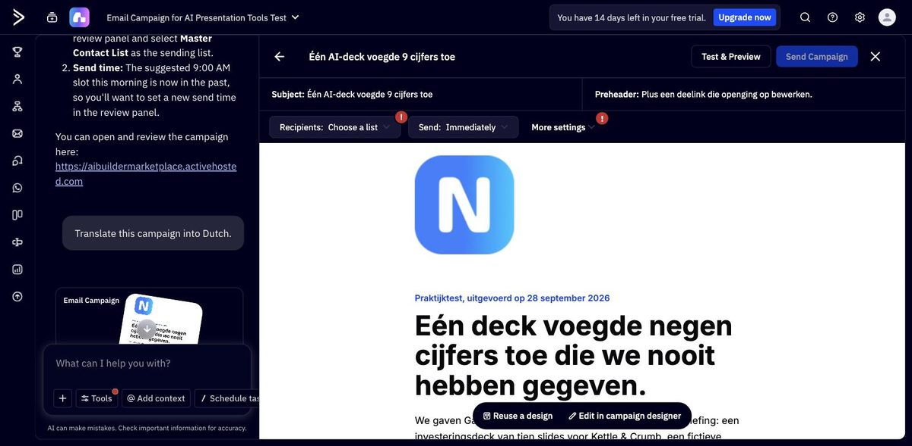
ActiveCampaign’s release notes for Active Intelligence 3.0: Wavelength list AI image generation. We could not get an image on 30 September. Asked inside the campaign, the chat answered “I couldn’t use what I was given for that”. Asked in a new conversation, it said “I’m not able to generate or create images directly” and suggested DALL·E, Midjourney or Adobe Firefly. The generator itself sits in Email > Content, according to ActiveCampaign’s help centre. There, the window promised “This may take up to 20 seconds” and returned nothing in four attempts over half an hour, with brand personalisation on and off, waiting up to 187 seconds, nor in a fifth attempt an hour and a half later. There was no error message. On 3 October 2026 at 08:40 UTC we tried again with the same prompt, the Cinematic style and brand personalisation on. The same message stayed on screen for more than 150 seconds, after which we stopped: no image and no error. On 5 October we tried twice more with the same prompt and settings (Cinematic, brand personalisation on): after 160 and about 165 seconds, again no image and no error. During the second try the browser’s network log for the tab showed no request to ActiveCampaign after the click, only analytics pings, so the request may never have left the page; a websocket would not show in that log, so we cannot be sure. Eight attempts on three days: from the outside we still cannot tell whether it is the trial account, the feature itself or a fault at ActiveCampaign. That was our last try in this trial.
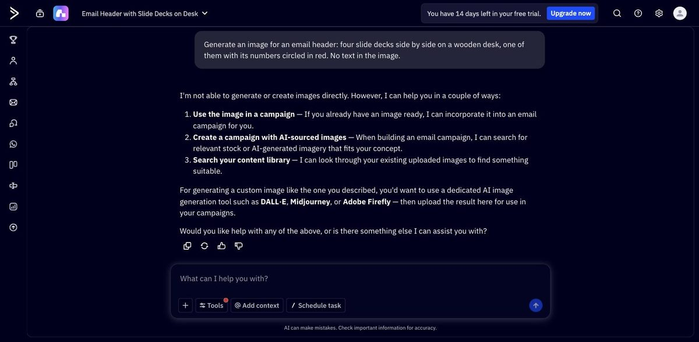
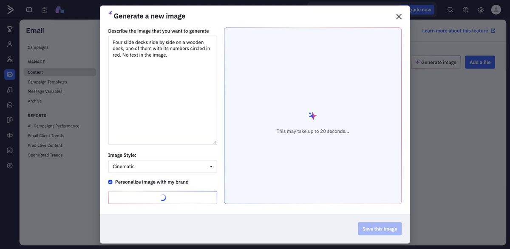
Asked for a welcome series (one email right away, two follow-ups a few days apart), it built one in about a minute: trigger on a new list called “newsletter signup”, email, wait three days, email, wait three days, email. No duplicate steps, every step editable in the normal builder, and left inactive until you switch it on. The emails are about our own features (the Atlas, the Tool Finder, “who should skip it”), in the voice from the Brand Kit. The first subject line promises “490+” reviewed tools: our homepage says 490, the plus sign is its own.
Then we asked it to check the health of our automations. It flagged the obvious (inactive, no contacts yet) and called multi-entry “appropriate for a welcome series”. It did not flag the two things that would actually stop this one working: every email still showed “An address is needed in order to send this email”, and nothing feeds the new list, because no form or import had been set up.
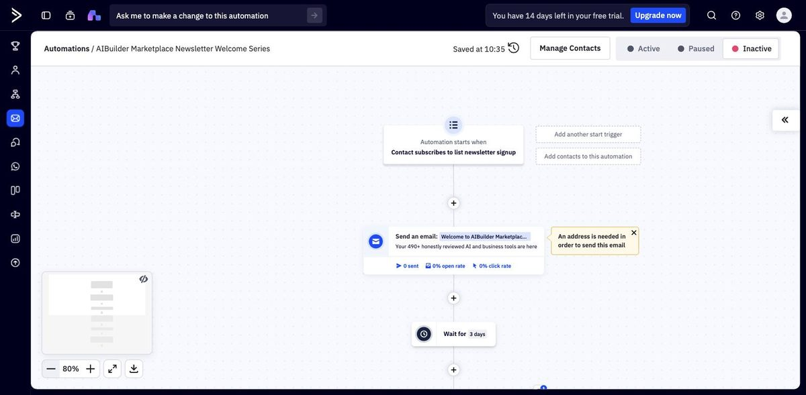
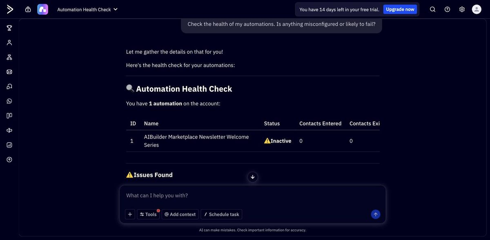
The Schedule task button turns any prompt into a recurring job. Our first try sent only the button’s tag and came back with “A network error occurred”. The second produced a daily task at 08:00 Amsterdam time that emails us a three-point summary of our account and our Brand Kit competitors. Its own description of the job says it will look at G2, Capterra and TrustRadius “for Brand Kit mentions”, which is not quite what we asked. The “Run now to preview” panel had not loaded after nearly five minutes, so we switched the task on.
The first report arrived on 1 October 2026 by 08:15 Amsterdam time. The account half was accurate: five draft campaigns, one contact, no deals and no automation activity, which it called “expected for a brand-new, unsent account” rather than a problem. The competitor half followed its own task text, not our prompt: it summarised a G2 product release, a Capterra industry report and the TrustRadius awards, and noted that none of them mentioned us. The three competitors in our Brand Kit (lindy.ai, missiveapp.com and getalai.com) did not appear at all. We paused the task after this first report.
The AI Actions Library (the automation step that summarises, translates, classifies or scores a contact field) is listed in the automation builder but locked in the trial: “AI Actions require Activities to use.” That matches ActiveCampaign’s pricing page, read on 30 September 2026, which lists AI actions as an add-on on every plan.
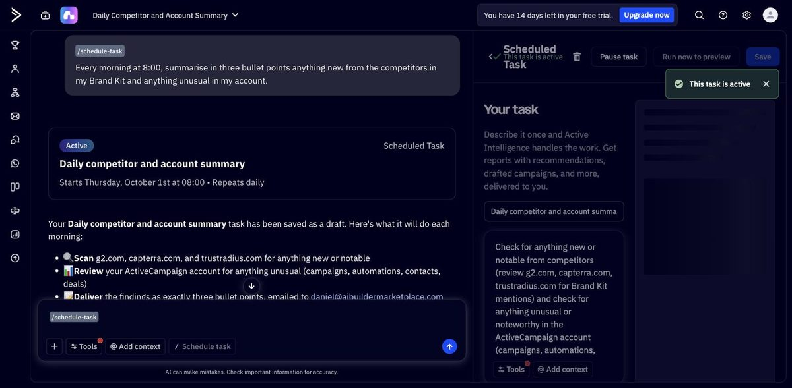
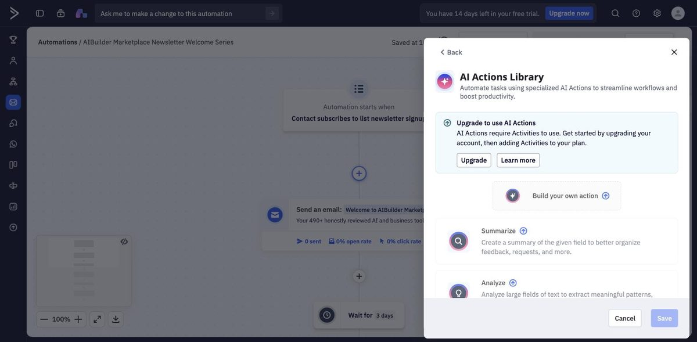
One account on one morning does not support a verdict, so this is what the run does support.
Our full review: ActiveCampaign. Our other hands-on tests: one pitch deck, four AI presentation tools · one booking app, three AI builders. How we separate researched reviews from hands-on ones: how we review.
The scheduled task’s first report is in (see task 8). We tried the image generator again on 3 and 5 October, three more attempts, again without an image (see task 6). That closes the image test for this trial, which ends on 14 October 2026.
Download everything for edition 2026-09-30 (.zip)
Edition 2026-09-30. Every file below is the analysis input or output of this edition; the checksums let you confirm you have the same bytes we published. The manifest carries the population, period, definitions and counts. A rebuild of this page is not a new measurement: new rounds become new editions, and a changed edition carries a correction note.
| Edition | Status | Headline | Data |
|---|---|---|---|
| 2026-09-30 | current | 1 of 2: campaign drafts contained a sentence our source page does not support | manifest |
Licence: CC BY 4.0 — Our own data, analysis, tables and charts. Quoted vendor text and screenshots of vendor pages remain the vendor's; we reproduce them as evidence. Questions, corrections or a vendor response: daniel@aibuildermarketplace.com · press & data.
AIBuilder Marketplace, “Active Intelligence 3.0: Wavelength on a brand-new ActiveCampaign account”, hands-on test run on 2026-09-30. Free to quote and reproduce with attribution (CC BY 4.0).